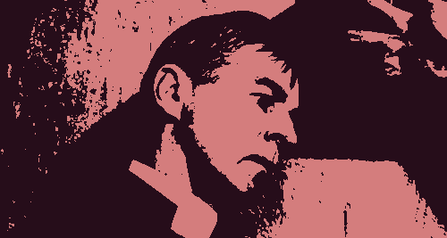
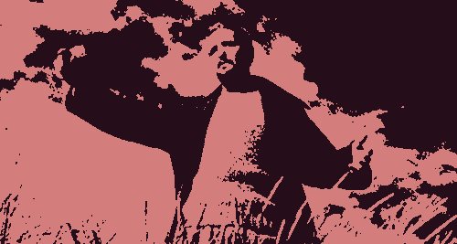
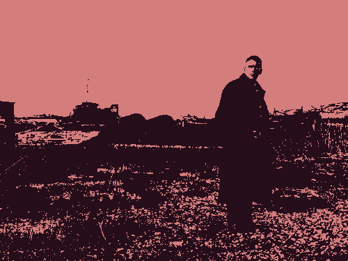
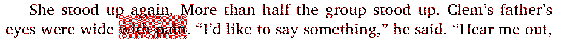
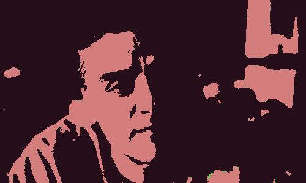

firstreformed
Put on the full armor of God, so that you can make your stand against the devil’s schemes. For our struggle is not against flesh and blood, but against the rulers, against the authorities, against the powers of this dark world. (Ephesians 6:12)
If there’s any movie or piece of art which has forever changed the way I look at movies – probably even has changed my life – it’s going to be First Reformed (2017), directed by Paul Schrader. Many of my friends will know that I never really shut up about this movie, even though I watched it about four years ago.
Flannery O’Connor, a renowned Catholic author, once described her short stories as “slow-acting medicine”. That is, she wanted the immediate impact of her story not to be so obvious; for it to linger in your system for a long time, changing your body and mind in ways scarcely known to you. When I saw her writing about this, I seemed to see these slow-acting medicines everywhere I looked – stories that are deceptively simple or sometimes impassive and obscure, but all the same have an incredibly long half-life, the change it provokes in you only noticeable long after the initial point of contact. First Reformed is one of these stories.
I rarely write reviews of movies, but when I do, I often fall into the trap of retelling the plot. So I won’t be telling you much about the actual events that occur, at least outside of the basic premise. I won’t even be telling you the main characters’ names, aside from the protagonist. Instead, I’ll be talking around the movie. Namely, why I think it has such a hold on me, some of its spiritual ancestors, and the rest of Paul Schrader’s work.
To put it briefly, First Reformed is about an ailing pastor, Reverend Ernst Toller, who works at a titular church and begins to counsel a couple new to the area: a pregnant woman and her troubled husband, who is a climate activist. The church is small and underfunded, in stark contrast to the nearby megachurch. Notably, Reverend Toller keeps a diary, which serves as a fairly stable vehicle for the story until shit happens.
The man in the room
First Reformed is Schrader at his most self-indulgent. It’s one of the newest in the long lineage of “man in a room” movies that Schrader has been working on for literally his entire career, whose eponymous men include Robert De Niro of Taxi Driver, Richard Gere of American Gigolo, and Willem Dafoe of Light Sleeper – even Ken Ogata's depiction of Yukio Mishima in the largely nonfiction Yukio Mishima: A Life in Four Chapters smolders like a bruised ex-angel.
It is also the beginning of a much more recent trilogy that deals with troubled men and acts of cathartic violence in a struggle against themselves, the other two movies being The Card Counter (2020) and Master Gardener (2022) (both, while not quite reaching the heights of First Reformed, are very much worth watching on their own).
Many of these movies follow somewhat of a formula, and come with their own tropes. There’s an alienated man writing in his diary, in an austere and poorly-lit room, with funereal voiceover:
[…] He is reading from a haphazard personal diary.
TRAVIS (V.O.) (monotone) April 10, 1972. Thank God for the rain which has helped wash the garbage and trash off the sidewalks.
TOLLER (V.O.) I will keep this diary for one year, twelve months and at the end of that time it will be destroyed. Shredded, then burnt. The experiment will be over.
William Tell1 restlessly tosses on his motel bed. His journal is open on the sheet wrapped desk. The most recent entry reads: “A young man approached me. A boy. He gave me a card.”
John’s apartment. Night. He writes in his diary, drinks.
LETOUR I feel my life turning. All it needed was a direction. You drift from day to day, years go by. Suddenly there is a direction.
(voice over)
It’s self-parody at this point, but I don’t say this disparagingly. Schrader has been making the same movie over and over again, intermittently throughout his career. Yet somehow, it’s one of the most fascinating long-term creative projects I’ve ever seen. Coming up on 80 years old, and struggling with various pulmonary illnesses (it is sometimes painful to hear him trying to catch his breath in interviews), Schrader is all too aware that his next movie might be his last; in a press conference at Cannes for his newest movie, O, Canada, he remarks with his usual bluntness that “every time I’m getting ready to die, I have a new idea”2.
A genealogy
The movies often referenced when Paul Schrader talks about First Reformed are:
- Winter Light (1963, dir. Ingmar Bergman) 
- Diary of a Country Priest (1951, dir. Robert Bresson)
- Ordet (1955, dir. Carl Theodor Dreyer) 
These movies all have left such an indelible mark on the creation of First Reformed, that it would be easy for even a cursory viewing to draw direct mappings from one to its successor: Winter Light depicts a priest who counsels a man tormented by the threat not of climate change, but of nuclear war; Diary of a Country Priest, well, it’s literally in the name; Schrader himself acknowledges that the very last scene of First Reformed is in imitation of Ordet’s very last. (More specifically, he says that he had the choice to choose between a Diary-style ending and an Ordet-style ending; he chose the latter. I’ll keep this remark vague because the endings of both movies should not be spoiled…)
I don’t know what the ending is. […] God comes over to him, who has not talked to him for the whole movie, and says, ‘Reverend Toller, you wanna know what Heaven looks like? Here it it is. This is exactly what it looks like’. And that’s the last thing he sees.
In fact, you could say that the epistolary and robotic nature of Schrader’s man-in-a-room movies is taken wholesale from Bresson. Out of all of these influences, Diary is almost shocking in its similarities with First Reformed specifically, which is why I recommend it as a double-feature. But Bresson’s other movies, like Pickpocket, are firmly embedded in a similar phenotype which probably spans back forever, traversing mediums to reach the likes of Dostoyevsky’s Crime and Punishment.
Interviews with Schrader about First Reformed will see him inevitably bring up his Master’s thesis from back when he studied film at UCLA: Transcendental Style in Film: Ozu, Bresson, Dreyer4.
In recent years film has developed a transcendental style, a style which has been used by various artists in diverse cultures to express the Holy. […] The style is not intrinsically transcendental or religious, but it represents a way (a tao, in the broadest sense of the term) to approach the Transcendent.
Schrader employs a transcendental style in two scenes – one near the middle, the other being the very last – to stunning effect in First Reformed.
All the same, I still think skimming through Transcendental Style can be interesting, especially focusing on the directors you are interested in out of the three (I’m not really familiar with Ozu, but I very much enjoyed reading the section on Bresson). I specifically love how Schrader draws parallels between Orthodox icons and the actors in Bresson’s movies.
The long forehead, the lean features, the closed lips, the blank stare, the frontal view, the flat light, the uncluttered background, the stationary camera, these identify Bresson’s protagonists as objects suitable for veneration.
Though maybe not exactly Bressonian, Ethan Hawke, who plays the part of Reverend Toller, captures a similar abstraction: he is gaunt and almost always dressed in black, there is a permanent furrow between his brows, and he is colorless and moribund even in his moments of brief happiness. He’s God’s lonely man, an abberant samurai from a bygone era, abandoned by his so-called compatriots. Sometimes he is incompetent and pathetic, yet he carries himself like an arbiter, an eremite, a prophet – and isolates himself accordingly.

In Crossroads, the newest novel by Jonathan Franzen, he describes a main character (who also happens to be a pastor)5 as his eyes go “wide with pain”; I always associated that phrasing with Reverend Toller and his comical sense of martyrdom, his barely-repressed anguish. Throughout the movie, we see him lose his careful hold on himself, and it's unbearable to watch someone so repressed lose the things that once defined him: self-control, restraint, routine. Any chance at quiet dignity is destroyed as soon as we see him in the hospital, the doctor pressing a stethoscope against his sallow back.

Toller’s humiliation at the hands of those far more powerful than him recalls Mark 6:4: A prophet is honored everywhere except in his own hometown and among his relatives and his own family. He is Snowbridge’s holy fool.
A crisis of faith
I watched First Reformed during a time when I was in a sort of “crisis of faith”. I don’t like calling it that because it implies that it impacted my life beyond just a spiritual sense; as if I was worrying about God while brushing my teeth or trying to learn differential equations. It wasn’t that dramatic. But I remember distinctly that it was the “crisis of faith” apparent in the synopsis of the movie which drew me in at first, so that I could not only empathize with the character but also see my minor crisis be splayed out on the screen to typically cinematic proportions and depths.
I’m a lapsed Catholic now, and even though First Reformed wears its Calvinist and broader Protestant influences on its sleeve (Schrader was raised in a draconian Calvinist household, and did not watch a single movie until he was 17 years old6), it still jarred me enough to attempt to find my way back to Catholicism for two, maybe almost three years. If I hadn’t watched it, I probably would never have considered RCIA, which officially confirms you as a member of the Catholic Church (of course, I didn’t carry through with it).
For a movie ostensibly about climate change and faith, Schrader manages to sneak in the topics which have lurked throughout much of his career: the main character’s son died in the Iraq War, a topic that Schrader explicitly treats in his next movie, The Card Counter.

And am I trying to justify what we did? No. Nothing justifies what we did.
Acts of ecoterrorism are briefly mentioned, as well as climate activist martyrs in South America and activist groups local to New York, where the movie is set. I like how despite the movie’s headiness, it’s impossible to separate it from its historical context, just like how it’s impossible to talk about Taxi Driver without mentioning its Vietnam War backdrop, or the fact that The Card Counter’s protagonist is an Iraq War veteran, or that the lead of Master Gardener is a former neo-nazi… and on, and on.
In one scene, the Reverend Toller is in a conversation with the man he is trying to counsel. The man turns to Toller with an aggrieved stare after a long-winded rant in which he enumerates the consequences of even just a few degrees of global warming: mass casualities and displacements on an unprecendented scale. He says:
In 2010 the IPCC predicted that if dramatic action was not taken by 2015, environmental collapse would be irreversible. Nothing was done. It’s now 2017.
This quote might date the movie, but in my mind it is genius; it only becomes more damning with every passing year.
I think a big part of why First Reformed has captured my attention for so long is the space it occupies in Schrader’s body of work and its synergies with its inspirations. This family of movies seems to give way to a mythology whose heart contains a torch that has been burning ever since the start of the twentieth century (Bresson's time), an ostensorium perserved in amber. There’s so much to explore about it beyond just the movie itself, and the movie already gives you plenty to think about.
When I was in high school I wrote over ten thousand words about this single movie (though most of it was scene-by-scene analysis, and thus even less interesting than this write-up). Honestly, I’m not sure if I like movies so much as I like this one particular movie, if such a difference really matters in the end. For better or worse, I will take it with me through the rest of my life.